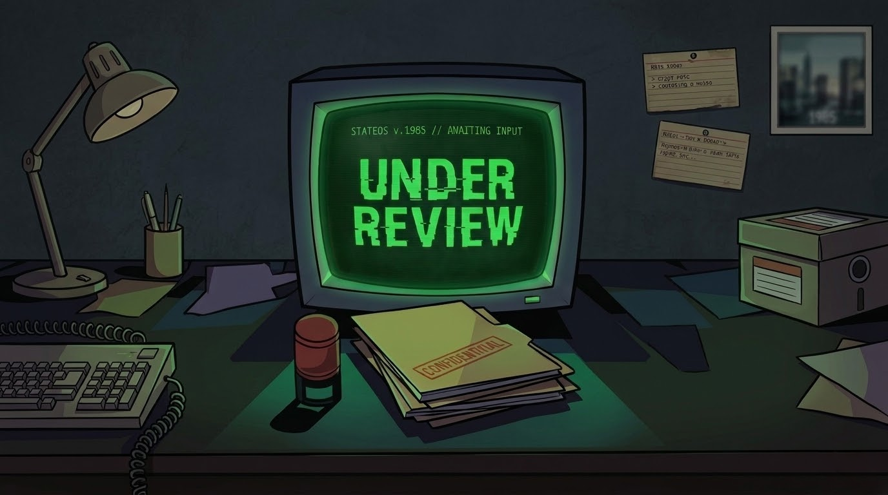

It is 1985. You have just been assigned as a Human Resources officer at a government institution. Your duty: review incoming candidate files and decide who gets the job — and who does not.
But the files hold more than job applications. Rumors of an unidentified illness are beginning to surface through the institution's corridors. The pressure mounts, and every hiring decision carries far more weight than it should.
Inspect documents, cross-reference records, manage your budget and reputation. Under Review is a decision-driven game where bureaucracy, moral ambiguity and a rising mystery collide.
New intel will be transmitted soon. Follow Altheas Studios to receive updates as details are declassified.